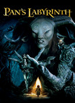
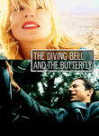

Metacritic: Best-Reviewed 2000s
http://features.metacritic.com/features/2009/the-best-movies-of-the-decade/
List contains: 99 items, 193.9 hours.
List contains: 99 items, 193.9 hours.
Stephen Klancher
...has seen 29
...has seen 58.2 hours
...has not seen 135.8 hours

Timeline - Covers
Most Recent:
Persepolis
First Unseen:
4 Months, 3 Weeks and 2 Days (# 2)
...has seen 29
...has seen 58.2 hours
...has not seen 135.8 hours
Timeline - Covers
Most Recent:
Persepolis
First Unseen:
4 Months, 3 Weeks and 2 Days (# 2)
1.

Pan's Labyrinth (2006) Releases on 2007-01-19
Stephen Klancher: January 27, 2007 
This was disappointing to me because I wanted the whole movie to be like the fantasy scenes on which the trailer focused. Also "Pan's Labyrinth" became a pronouncement of intention to crush a man's face with a bottle as was done in this movie.
3.
Ratatouille (2007)
Stephen Klancher: September 24, 2007
I took my little sister Maddi to see this. Pretty good for a family movie.
4.

Spirited Away (2001) Releases on 2001-07-20
Stephen Klancher: April 6, 2003
I watched with in a theater in Bakersfield with my mom. I don't know if it was a rerelease or late after the release or if this is all they did in Bakersfield, but I seem to remember that it was only playing on this one screen in town and it was an abnormally small one.
I really enjoyed the animation and the fantasy of the whole setting.
I really enjoyed the animation and the fantasy of the whole setting.
6.

The Lord of the Rings: The Return of the King (2003) Releases on 2003-12-17
Stephen Klancher: December 17, 2003
Probably my favorite of the trilogy, but they are all fantastic.

8.

WALL·E (2008)
Stephen Klancher: July 27, 2008
I saw this with Tim and his wife at the tail end of its theater run. Cute movie and the first half or so is another good example of how much can be communicated with no verbal dialog.
9.
Crouching Tiger, Hidden Dragon (2000)
Stephen Klancher: SEEN
I remember being so pleased when I watched this and, without looking at the subtitles, I understood the phrase "I don't know" spoken in Chinese.
12.

The Diving Bell and the Butterfly (2007)
Stephen Klancher: March 18, 2010
Especially in the beginning, some of this was really hard to watch because it was through his perspective and his vision would dim, his eye would wander, and of course he would blink a lot. But then there are worse ways to spend time than watching beautiful women smiling and making eye contact while reciting the alphabet in French. Interesting movie overall.
14.
There Will Be Blood (2007)
Stephen Klancher: April 17, 2008
Omg he'll drink your milkshake. Really, he'll do it. I think there may have been a good movie here. But all I remember is that he'll drink your milkshake.
15.

The Lord of the Rings: The Fellowship of the Ring (2001) Releases on 2001-12-19
Stephen Klancher: SEEN
I read half-way through the books, quit for a while, then finished right before this came out. I actually like the movies better. I enjoy all three movies, but one notable thing about this one was much fun it was that everyone around me was really into it at the time. The fact that the girls I was friends with and girlfriend at the time were drooling over the actors just added another reason for everyone to be enthusiastic and want to keep rewatching it. So yeah, fun times. :-)


22.

Vals Im Bashir (2008)
Stephen Klancher: August 17, 2009
Incredibly cool visual style which added to the surreal path of tracing his memories.
23.
No Country for Old Men (2007)
Stephen Klancher: November 19, 2007
Wow, this was cool. The ending was kinda like, "wait, what?" but the bad guy Anton was very memorable. "What's the most you ever lost on a coin toss?"
26.
The Incredibles (2004)
Stephen Klancher: SEEN
Pixar movies are pretty great. They do a great job of making either a kids movie that adults can enjoy or just a good movie which happens to be acceptable for kids as well.

33.
Persepolis (2007)


40.
Borat: Cultural Learnings of America for Make Benefit Glorious Nation of Kazakhstan (2006) Releases on 2006-11-03
Stephen Klancher: November 9, 2006
I did think this was funny, but I clearly did not think it was as funny as the rest of the theater.
41.

Finding Nemo (2003)
Stephen Klancher: SEEN
The main thing I remember about this movie was that it had very pretty color. And I think I watched it with a few other people in the common room of our floor of my freshman dorm.
42.

Eternal Sunshine of the Spotless Mind (2004) Releases on 1969-12-31
Stephen Klancher: SEEN
I love this movie. Would I zap my brain? Probably. Maybe I already did. How would I know? Whatever. I love this movie.


47.
The Lord of the Rings: The Two Towers (2002) Releases on 2002-12-18
54.

Up (2009)
Stephen Klancher: June 14, 2009
That was a fantastic movie. Visually very pretty. The kid and the dog are a great counterpoint to the old man. Not many movies manage to be so happy and kid -friendly and actually be so amazing. I walked out of the theater happy!
69.

Slumdog Millionaire (2008)
Stephen Klancher: February 15, 2009
Fantastic music and a very well put together movie. I can see why it was so well liked.
70.

Million Dollar Baby (2004)
Stephen Klancher: July 4, 2009
Excellent movie! A lot like Gran Torino. Those three are fantastic actors. Some really hard to watch scenes, but just very good.


85.
The Departed (2006)
Stephen Klancher: SEEN
I think this is one of the finest remakes ever. I saw the original Infernal Affairs several years prior and loved it. But this version was excellent in its own right.